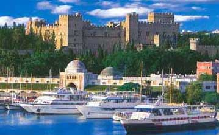

Η μεσαιωνική πόλη της Ρόδου
 Μνημείο παγκόσμιας κληρονομιάς η μεσαιωνική πόλη της Ρόδου άρχισε να παίρνει τη σημερινή μορφή της κατά την περίοδο των Ιωαννιτών ιπποτών, οι οποίοι αγόρασαν το νησί από τους Γενοβέζους κατακτητές το 1306. Ο περίβολος του μεσαιωνικού τείχους, που περιέβαλε το λιμάνι, χωριζόταν σε οκτώ τμήματα, τη φύλαξη των οποίων είχαν αναλάβει οι οκτώ «γλώσσες» (εθνικές ομάδες του Τάγματος). Κατά την περίοδο της τουρκοκρατίας η μεσαιωνική πόλη αποτέλεσε αποκλειστικό χώρο κατοικίας των τούρκων, ενώ κατά τη διάρκεια του ιταλο-τουρκικού πολέμου (1911-12) καταλήφθηκε από τον ιταλικό στρατό. Οι ιταλοί αναστήλωσαν τους χώρους του Καστέλου και το διαμόρφωσαν σύμφωνα με τις ανάγκες τους, με σκοπό να λειτουργήσει ως κατοικία του κυβερνήτη. Η ιταλική κυριαρχία στα Δωδεκάνησα διατηρήθηκε έως το 1948. | ||